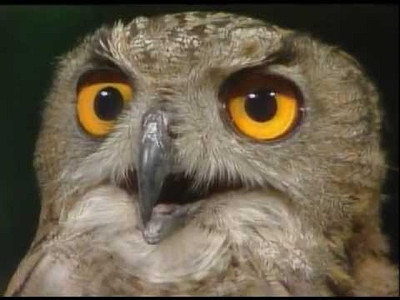

Бушава азбука
„Бушава Азбука“ е легендарна македонска детска серија продуцирана од страна на МРТВ во 1985 година. Автори на серијата се Горан Стефановски и Слободан Унковски, а музиката е на Леб и сол во соработка со Ана Костовска.
Овој серијал е насочен кон детското образование и запознавање со македонската азбука, јазик, книжевност, култура и традиција. Вкупно има 31 епизода, од која секоја е посветена на одредена буква од македонската азбука. Просечното траење на една епизода е половина час.
„Бушава азбука“ е една од најуспешните ТВ серии во историјата на МРТВ, со која пораснаа илјадници деца во Македонија. Исто така, „Бушава азбука“ се појави и во вид на илустрирана книга за деца која уживаше голема популарност кај децата од предшколска возраст.
Своевиден заштитен знак на серијата е бувчето кое намигнувајќи со едното око ни го најавуваше почетокот на емисијата со зборовите: „О-о, време е за бушавата азбука!“
